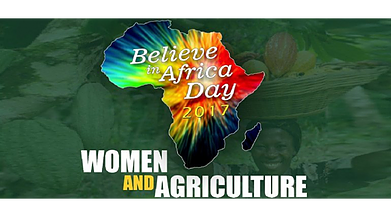

-
Les difficultés des femmes africaines
11 commentaires 
dans l’agriculture passées au crible à MarrakechL’Association américaine «Believe in Africa» (Croire en l’Afrique), a organisé à Marrakech du 11 au 13 septembre, un congrès international sur le thème «Femmes et agriculture en Afrique». Cette rencontre, qui a pris fin ce mercredi, a réuni quelque 300 congressistes, ...
Lire -
Bienvenue au FAGEM
9 commentairesLe Think Tank Afrique Grenier du Monde, organise son Forum Afrique Grenier du Monde (FAGEM) le 31 Octobre 2017 à l’Hôtel de la Plage AZALAÏ de Cotonou (Bénin) en partenariat avec la Chambre de Commerce et d’Industrie du Bénin (CCIB) Sur le thème : « Réussir le Défi Agr...
Lire
Rechercher
Categories
- AGRF 2017 : Ouattara appelle les Etats Africains à ‘’plus de volonté politique’’
- Marrakech accueille la conférence « Femmes et Agriculture en Afrique »
- Akinwumi Adesina : « C’est l’Afrique qui devrait nourrir le monde, pas l’inverse »
- Les cafés AGM : une autre manière de penser l’Afrique
- Afrique : agroalimentaire, la grande bataille de demain ...PAR ROLAND PORTELLA
- Ahmedabad, Assemblées annuelles 2017 du Groupe de la Banque africaine de développement
- La start-up africaine de la semaine : les jus de fruits made in Mali de Zabbaan décollent et s’exportent
- Forum de la Jeunesse africaine sur l'Agrobusiness